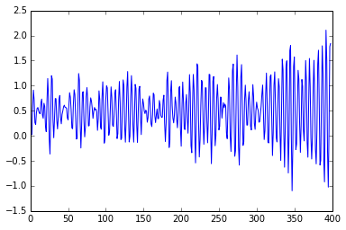
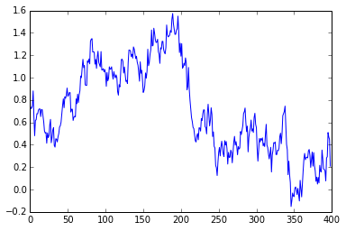

Contents¶
This notebook covers the pre-defined spectral models available for light curve simulation. Specifically, the notebook describes the meaning of different parameters that describe these models.
Setup¶
Import relevant stingray libraries.
[1]:
from stingray.simulator import simulator, models
Import pyplot from matplotlib for plotting light curves.
[2]:
from matplotlib import pyplot as plt
%matplotlib inline
Spectral Models¶
Currently, stingray has two spectral models namely generalized lorenzian function and smooth broken power law function. More models will be added in future.
Generalized Lorenzian Function¶
Apart from the frequencies, the lorenzian function needs the following parameters specified.
p: iterable
p[0] = peak centeral frequency
p[1] = FWHM of the peak (gamma)
p[2] = peak value at x=x0
p[3] = power coefficient [n]
Smooth Broken Power Law Model¶
Apart from the frequencies which need to be passed as a numpy array, smooth broken power law needs the following parameters specified.
p: iterable
p[0] = normalization frequency
p[1] = power law index for f --> zero
p[2] = power law index for f --> infinity
p[3] = break frequency
Light Curve Simulation¶
These models can be imported while simulating lightcurve(s).
[3]:
sim = simulator.Simulator(N=1024, mean=0.5, dt=0.125)
[4]:
lc = sim.simulate('lorenzian', [1.5, .2, 1.2, 1.4])
plt.plot(lc.counts[1:400])
[4]:
[<matplotlib.lines.Line2D at 0x11479cf90>]

[5]:
lc = sim.simulate('smoothbknpo', [.6, 0.9, .2, 4])
plt.plot(lc.counts[1:400])
[5]:
[<matplotlib.lines.Line2D at 0x114941490>]
